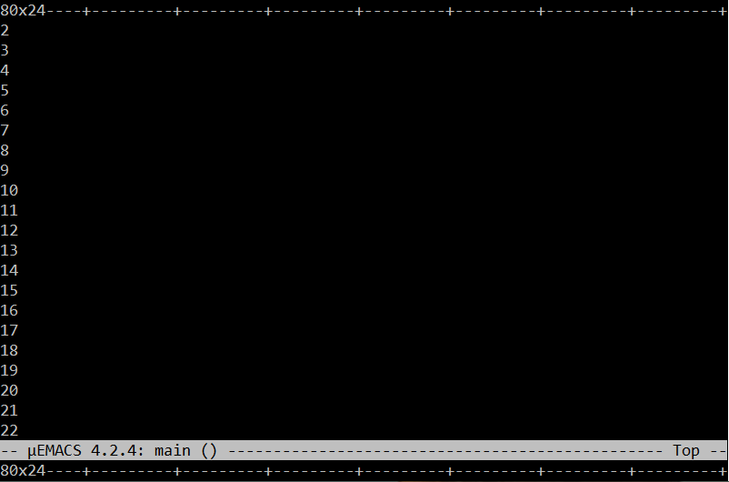

% which gcc make /usr/bin/gcc /usr/bin/make % apt list gcc make gcc/focal,now 4:9.3.0-1ubuntu2 amd64 [installed] make/focal,now 4.2.1-1.2 amd64 [installed]Use your favorite package manager if they need to be installed.
% sudo apt install gcc makeTo check that make is actually GNU make:
% make --version GNU Make 4.2.1 Built for x86_64-pc-linux-gnu Copyright (C) 1988-2016 Free Software Foundation, Inc. License GPLv3+: GNU GPL version 3 or later http://gnu.org/licenses/gpl.html This is free software: you are free to change and redistribute it. There is NO WARRANTY, to the extent permitted by law.ncurses development library usually need to be installed. Query your favorite package manager to check which packages are available for installation:
% apt search libncursesUse your favorite package manager to install the needed package:
% sudo apt install libncurses-devOn Ubuntu, apt will select the package that matches your architecture (amd64 or i386).
Move to working directory and clone:
% mkdir ~/Projects % cd ~/Projects % git clone https://github.com/rfivet/uemacs.git
% cd ~/Projects/uemacs % makeIf GNU make is not set as the default make you will have to call it explicitly
% gmake
% ./ueTo leave the editor type CTL-X CTL-C
Execute a sample script:
% ./ue -x screensize.cmd